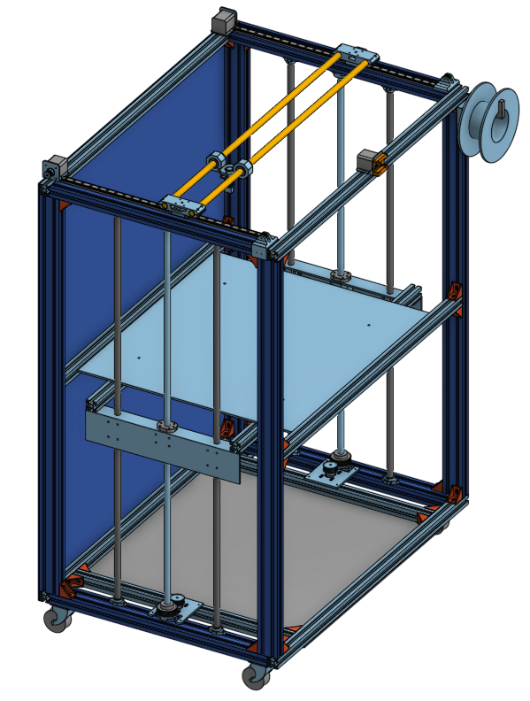

<!doctype html>
<html lang="en">
<head>
    <meta charset="utf-8">
<title>
2018 Fall 分組網際簡報
</title>
    <meta name="description" content="A framework for easily creating beautiful presentations using HTML">
    <meta name="author" content="Hakim El Hattab">
    
    <meta name="apple-mobile-web-app-capable" content="yes">
    <meta name="apple-mobile-web-app-status-bar-style" content="black-translucent">
    
    <meta name="viewport" content="width=device-width, initial-scale=1.0, maximum-scale=1.0, user-scalable=no">
    
    <link rel="stylesheet" href="css/reveal.css">
    <link rel="stylesheet" href="css/theme/black.css" id="theme">
    
    <!-- Theme used for syntax highlighting of code -->
    <link rel="stylesheet" href="lib/css/zenburn.css">

    <!-- Printing and PDF exports -->
    <script>
        var link = document.createElement( 'link' );
        link.rel = 'stylesheet';
        link.type = 'text/css';
        link.href = window.location.search.match( /print-pdf/gi ) ? 'css/print/pdf.css' : 'css/print/paper.css';
        document.getElementsByTagName( 'head' )[0].appendChild( link );
    </script>

    <!--[if lt IE 9]>
    <script src="lib/js/html5shiv.js"></script>
    <![endif]-->
</head>

<body>
<div class="reveal">
<!-- Any section element inside of this container is displayed as a slide -->
<div class="slides">
<section data-markdown>
    <script type="text/template">
## 2018Fall 分組網際簡報

### 虎科大機械設計工程系

#### 四設二甲 張華倞 40623128

<small>
Created by [40623128](https://github.com/40623128)
</small>

[小組倉儲](https://github.com/mdecadp2018/finalproject-ag4)

[小組網站](https://mdecadp2018.github.io/finalproject-ag4/content/index.html)

    </script>
</section>


						
<section>
<section data-markdown>
    <script type="text/template">
<!-- 請注意, @others 不可以內縮 -->
## 這堂課我學了什麼?

    </script>
</section>


						
<section data-markdown>
    <script type="text/template">
<!-- 請注意, @others 不可以內縮 -->
## 這些嗎?

* onsape
* FeatureScript
* V-rep
* V-rep Python Remote API
    </script>
</section>


						
</section>

<section>
<section data-markdown>
    <script type="text/template">
<!-- 請注意, @others 不可以內縮 -->
## 先從期中前說起

    </script>
</section>


						
<section data-markdown>
    <script type="text/template">
<!-- 請注意, @others 不可以內縮 -->
## 期中前

老師讓我們自行掌握每周進度看完

Onshape教學 w1 - w12

這或許就是在訓練我們

自行閱讀原文書並學習

    </script>
</section>


						
<section data-markdown>
    <script type="text/template">
## 期中後 - 分組製作專題

需要分組製作專題

因為每個人擅長的領域不同

分工合作就顯得重要了很多
    </script>
</section>


						
<section data-markdown>
    <script type="text/template">
## 到現在我學到的精華是

* 學習的衝勁 - 好奇心
* 如何自學
* 如何解決問題
* 團隊合作的重要
* 平日累積的重要

    </script>
</section>


						
</section>

<section>
<section data-markdown>
    <script type="text/template">
<!-- 請注意, @others 不可以內縮 -->
## 這門課我做了什麼?
    </script>
</section>


						
<section data-markdown>
    <script type="text/template">
<!-- 請注意, @others 不可以內縮 -->
## 自學 FeatureScript

[簡略介紹](https://mdecadp2018.github.io/site-40623128/content/FeatureScript%E4%BB%8B%E7%B4%B9.html)

    </script>
</section>


						
<section data-markdown>
    <script type="text/template">
<!-- 請注意, @others 不可以內縮 -->
## 練習製作繪畫星星程式

<iframe width="560" height="315" src="https://www.youtube.com/embed/d2qZ1EtTdfU" frameborder="0" allow="accelerometer; autoplay; encrypted-media; gyroscope; picture-in-picture" allowfullscreen></iframe>

[原始碼](https://mdecadp2018.github.io/site-40623128/content/%E8%87%AA%E8%A3%BD%E7%B9%AA%E5%9C%96%E5%8A%9F%E8%83%BD%E7%B7%B4%E7%BF%92-%E6%98%9F%E6%98%9F.html)

    </script>
</section>


						
<section data-markdown>
    <script type="text/template">
## 六角填充程式註解

[原始碼](https://mdecadp2018.github.io/site-40623128/content/%E5%85%AD%E8%A7%92%E5%A1%AB%E5%85%85.html)

    </script>
</section>


						
<section data-markdown>
    <script type="text/template">
## 運用python控制v-rep模擬

<iframe width="560" height="315" src="https://www.youtube.com/embed/KqJ3erws-Ao" frameborder="0" allow="accelerometer; autoplay; encrypted-media; gyroscope; picture-in-picture" allowfullscreen></iframe>

[原始碼](https://mdecadp2018.github.io/finalproject-ag4/content/3D-Printer-Python-Control.html)

    </script>
</section>


						
<section data-markdown>
    <script type="text/template">
## 與組員進行專題製作

[3D-Printer](https://mdecadp2018.github.io/finalproject-ag4/content/index.html)



    </script>
</section>


						
</section>

<section data-markdown>
    <script type="text/template">
## 心得

上完這門課

不管是繪圖、寫程式、還是專題製作

我都從過程中學習到很多經驗

或許有些結果不盡理想

但都有得到成長

接下來要學的東西還很多

把所學到的經驗運用到接下來的課程

一定可以更加順遂

    </script>
</section>


						
</div>

</div>

<script src="lib/js/head.min.js"></script>
<script src="js/reveal.js"></script>
<script>
        // More info https://github.com/hakimel/reveal.js#configuration
        Reveal.initialize({
            controls: true,
            progress: true,
            history: true,
            center: true,

            transition: 'slide', // none/fade/slide/convex/concave/zoom

            // More info https://github.com/hakimel/reveal.js#dependencies
            dependencies: [
                { src: 'lib/js/classList.js', condition: function() { return !document.body.classList; } },
                { src: 'plugin/markdown/marked.js', condition: function() { return !!document.querySelector( '[data-markdown]' ); } },
                { src: 'plugin/markdown/markdown.js', condition: function() { return !!document.querySelector( '[data-markdown]' ); } },
                { src: 'plugin/highlight/highlight.js', async: true, callback: function() { hljs.initHighlightingOnLoad(); } },
                { src: 'plugin/zoom-js/zoom.js', async: true },
                { src: 'plugin/notes/notes.js', async: true },
                { src: 'plugin/math/math.js', async: true }
            ]
        });
</script>
</body>

</html>

